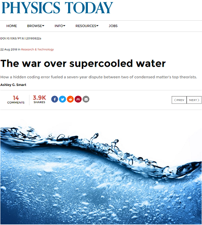
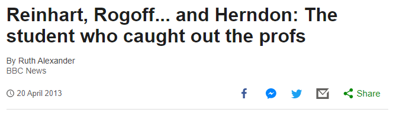
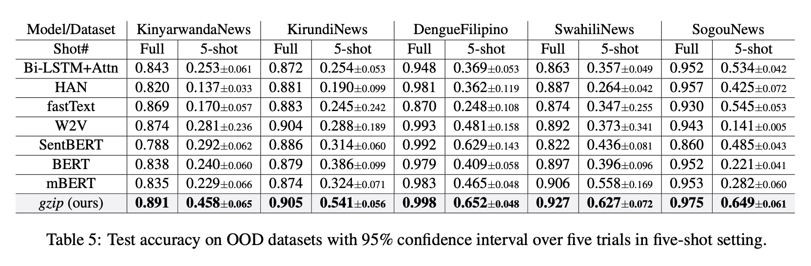
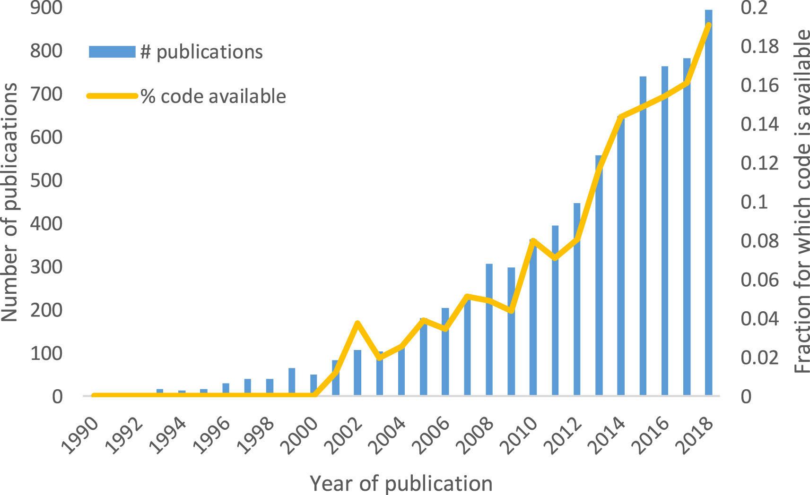

Code Reproducibility in Scientific Collaboration
Motivation
The war over super-cooled water

Water can form high- (left) and low-density amorphous ices at liquid-nitrogen temperatures. Researchers want to determine whether water can also form two distinct liquid phases at low temperature. Credit: Osamu Mishima
The war over super-cooled water
Growth in a time of debt
“When a country owes more than 90 percent of its GDP, it slides into recession.”
Photo by Annie Spratt on Unsplash
Growth in a time of debt
Photo by Annie Spratt on Unsplash
Growth in a time of debt

Photo by Annie Spratt on Unsplash
Early pandemic modeling code

Very recent example
- Study showed for certain data sets a much simpler model beats more complex models for cerain classification tasks. Documented code was provided and freely available
- On the 17th July, 2023 a blog post by an ML researcher indicated that a possible coding error led to inflated performance of gzip model
- Less than five days from study release to noting of potential errors
Reproducibility in scientific study code
- For example, an empirical evaluation of 7500 models, showed code sharing for 11% of them, with a modest increase over time (18% by 2018).
- Documentation remained very suboptimal also for other features such as the explicit provision of mathematical equations, flow charts, and pseudocode.

Reproducibility in scientific study code
- Another empirical evaluation of 455 models deposited in BioModels (https://www.ebi.ac.uk/biomodels/, a public open-source databases of quantitative mathematical models), showed that only 51% offered sufficient documentation so as to be able to reproduce their published research and another 12% could be salvaged with trial and error efforts or after communicating with the scientists who had created them[REF].

Benefits of Reproducible Code
- Facilitates collaboration and sharing of research
- Enables peer review and validation of results
- Increases transparency and trust in scientific findings
- Is a kindness (both to yourself and others!)
Tools for Reproducibility
1. Adding code comments
1. Adding code comments
- Include the “why” not the “what”
- Use to summarize a process, code chunk, or function
- Try to be as consistent as possible
1. Adding code comments
What comment could go here?
2. Creating modular code
Any fool can write code that a computer can understand. Good programmers write code that humans can understand. – Martin Fowler
- Don’t repeat yourself (DRY)
- Creating functions to improve readability
- Make sure to add documentation to these functions (using roxygen in R)
- Try not to create too many entities
- Write functions that just do one thing
2. Creating modular code
- How could we improve the readability of this code?
data %>%
group_by(age_group,date) %>%
summarise(cases = n()) %>%
ggplot(aes(x=date,y=cases,color=age_group) +
geom_line()
data2 %>%
group_by(age_group,date) %>%
summarise(cases = n()) %>%
ggplot(aes(x=date,y=cases,color=age_group) +
geom_line()
grouped_data %>%
ggplot(aes(x=date,y=cases,color=age_group) +
geom_line()2. Creating modular code
- Add functions that try and do one thing
2. Creating modular code
- Add documentation to those functions (use Ctrl + Alt + Shift + R)
#' Group row level data by age_group and date
#' and count number of cases in each strata
#'
#' @param data row level data
#'
#' @return tibble
group_case_data <- function(data){
data %>%
group_by(age_group,date) %>%
summarise(cases = n())
}
#' Plot cases in time by age group
#'
#' @param data aggregated data
#'
#' @return ggplot2 object
plot_case_data <- function(data){
data %>%
ggplot(aes(x=date,y=cases,color=age_group) +
geom_line()
}2. Creating modular code
- How could we improve the readability of this code?
data %>%
group_by(age_group,date) %>%
summarise(cases = n()) %>%
ggplot(aes(x=date,y=cases,color=age_group) +
geom_line()
data2 %>%
group_by(age_group,date) %>%
summarise(cases = n()) %>%
ggplot(aes(x=date,y=cases,color=age_group) +
geom_line()
grouped_data %>%
ggplot(aes(x=date,y=cases,color=age_group) +
geom_line()2. Creating modular code
- How could we improve the readability of this code?
3. Creating a Readme
A good rule of thumb is to assume that the information contained within the README will be the only documentation your users read. – Benjamin Lee, Ten simple rules for documenting scientific software
3. Creating a Readme
- Should state project name, purpose and objective, methods and technology used, and individuals leading and contributing to project
- Include a getting started section
- Include any featured notebooks, analysis or deliverables
- For larger projects consider having a schematic of how the project is laid out to orient first timers
- Use markdown (or rmarkdown which can be compiled into markdown using
usethis::use_readme_rmd())
3. Creating a Readme
- Include a getting started section
- Imagine you don’t know anything about the project
- What software did you use to generate the results? What were the versions of the software? What packages and package versions did you use?
- How would you reproduce results? If you wanted to extend the analysis how would you go about it?
- If you encountered issues who can you contact?
3. Creating a README
# Project Name
#### -- Project Status: [Active, On-Hold, Completed]
## Project Intro/Objective
The purpose of this project is ________. (Describe the main goals of the project. Limit to a short paragraph, 3-6 Sentences)
### Methods Used
* Inferential Statistics
* Machine Learning
* Data Visualization
* Predictive Modeling
* etc.
### Technologies
* R
* Python
* D3
* etc.
## Project Description
(Provide more detailed overview of the project.
Talk a bit about your data sources and what questions and hypothesis you are exploring.
What specific data analysis/visualization and modelling work are you using to solve the problem?
What blockers and challenges are you facing?
Feel free to number or bullet point things here)
## Getting Started
1. Clone this repo (for help see this [tutorial](https://help.github.com/articles/cloning-a-repository/)).
2. Raw Data is being kept [here](Repo folder containing raw data) within this repo.
*If using offline data mention that and how they may obtain the data from the group)*
3. Data processing/transformation scripts are being kept [here](Repo folder containing data processing scripts/notebooks)
4. etc...
*If your project is well underway and setup is fairly complicated (ie. requires installation of many packages) create another "setup.md" file and link to it here*
5. Follow setup [instructions](Link to file)
## Featured Notebooks/Analysis/Deliverables
* [Notebook/Markdown/Slide Deck Title](link)
* [Notebook/Markdown/Slide DeckTitle](link)
* [Blog Post](link)
## Members
**Team Leads (Contacts) : [Full Name](https://github.com/[github handle])(@slackHandle)**
#### Other Members:
|Name | Slack Handle |
|---------|-----------------|
|[Full Name](https://github.com/[github handle])| @johnDoe |
|[Full Name](https://github.com/[github handle]) | @janeDoe |
## Contact3. Creating a README
Use the following checklist
- The name and goal of the project
- Project contributors and their roles, affiliations, contact information
- Setup and installation instructions for any software upon which the project depends
- A quick start guide with basic operating instructions (e.g., location of a main run script, or order of individual scripts to execute, and how to execute them)
- Known bugs or caveats of the code
- Other acknowledgements
Consider adding further readmes in sub-folders for larger projects
4. Version Control System (Git)
- Tracks changes in code and facilitates collaboration
- Allows for easy rollback and branching
5. Code Hosting Platforms (GitHub)
- Provides a centralized repository for code storage and collaboration
- Enables issue tracking and documentation
- Important to choose what licence to use
6. Follow a coding style guide
Code is much more often read than it is written
- Style guides are used to enhance readability
- The
tidyversestyle guide lintrtells you if your code conforms to the style guidestylrpackage can automatically fix your code so it conforms to the style guide
7. Cookie cutter approaches
- Libraries including Python Cookie cutter
- Creates project templates with predefined structure and settings
- Standardizes project organization and facilitates reproducibility
8. Automating workflows
- An example project might have the following files (along with many others…)
1_collect_data.R2_transform_data.R3_generate_model.R4_write_report.rmd
- We need to document to tell someone what they need to write in what order
- Not clear what dependencies are? We don’t know what each script produces or what the next script depends on?
- What if we need to update pipeline e.g. we find another way to transform data before step number three. Do we have to update all the file names? Scaling to more complex projects becomes difficult.
8. Automating workflows
# Define targets and dependencies
all: final_report.html
echo All files are now up to date
final_report.html: model_results.rds final_report.Rmd
Rscript -e "rmarkdown::render('final_report.Rmd')"
model_results.rds: model_fitting.R processed_data.rds
Rscript model_fitting.R
processed_data.rds: data_processing.R generated_data.csv
Rscript data_processing.R
generated_data.csv: data_generation.R
Rscript data_generation.R
# Clean up intermediate files
clean:
rm -f generated_data.csv processed_data.rds model_results.rds final_report.html8. Automating workflows
- R packages available to generate the make file for you and impose some structure.
- Represtools Based on four design principals for a data science project - Gather - collect data
- Cook. Alter raw data so that it is fit for analysis
- Analyze data
- Model construction, development, sensitivity etc.
- Present results
- Synthesize analysis to present to end-user or decision maker
- targets R package also creates pipelines specifically for statistics and data science in R.
9. Sharing the same environment
When sharing a project with other collaborators, you may want to ensure everyone is working with the same environment – otherwise, code in the project may unexpectedly fail to run because of changes in behavior between different versions of the packages in use. - Kevin Ushey, Posit Software, PBC
- Use renv in R to produce a reproducible environment
10. Adding everything into an R package
In R, the fundamental unit of shareable code is the package. A package bundles together code, data, documentation, and tests, and is easy to share with others. - Hadley Wickham
- Packages like
usethismake this surprisingly easy to do - This also forces a project into a specific structure where code, data, and vignettes have their own place
11. Automate the whole environment
- Automate configuring a local machine or cloud environment setup, including specific language compilers, software, libraries using a container such as Docker
- Creates isolated and reproducible software environments
- Ensures consistent execution of code across different systems
- Ultimate way to ensure someone else can run code in exactly the same environment that it was originally ran in
Conclusion
- Adding code comments
- Creating more modularity (refactoring)
- Create a README
- Use version control (git)
- Use a style guide (tidyverse for R PEP8 for Python)
- Host your code (Github)
- Organize your folder structure using a cookie cutter in Python or package structure in R
- Create a makefile to automate the whole workflow
- Use a reproducible coding environment (renv in R or venv in Python)
- Convert into an R package or Python library
- Create a reproducible development environment (Docker)
Thanks for listening